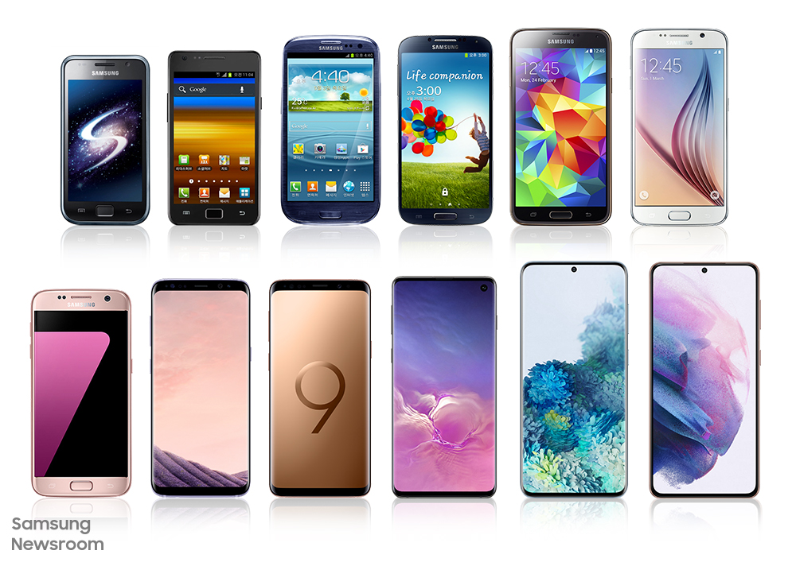

목차
- 역사
- 안드로이드
- 아이폰
- 샘플
역사
최초의 스마트폰은 사이먼으로 추정된다 IBM사가 1992년에 설계하여 그 해에 미국 네바다 주의 라스베이거스에서 열린 컴댁스에서 컨셉 제품으로 전시되었다.
안드로이드
최초의 스마트폰은 사이먼으로 추정된다 IBM사가 1992년에 설계하여 그 해에 미국 네바다 주의 라스베이거스에서 열린 컴댁스에서 컨셉 제품으로 전시되었다.
아이폰
최초의 스마트폰은 사이먼으로 추정된다 IBM사가 1992년에 설계하여 그 해에 미국 네바다 주의 라스베이거스에서 열린 컴댁스에서 컨셉 제품으로 전시되었다.
샘플
